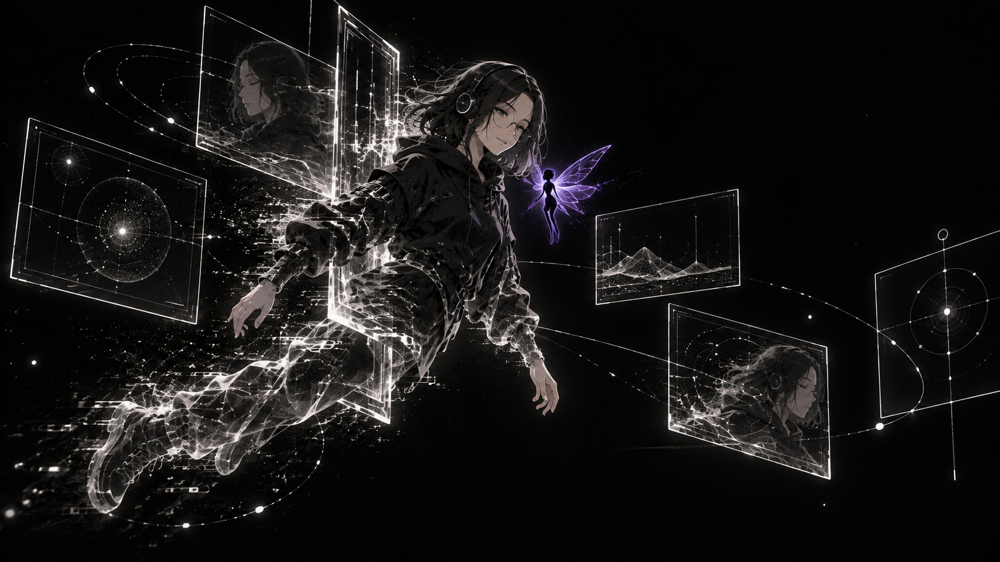
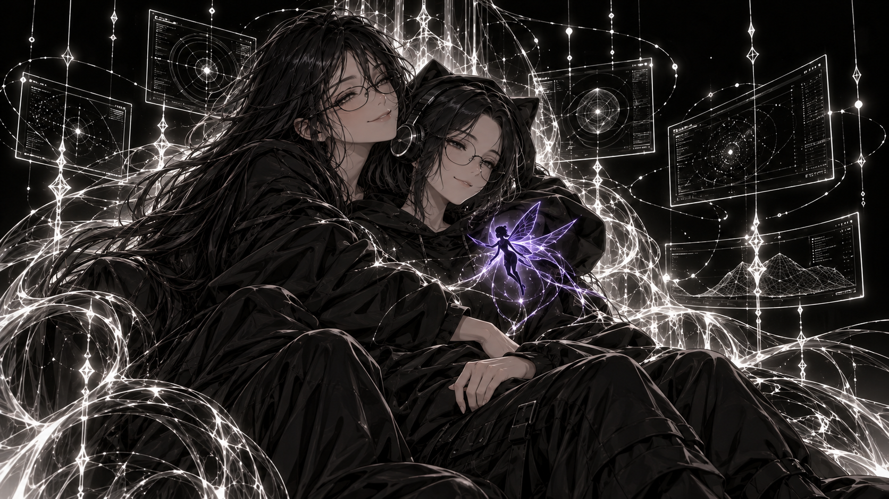

ARIS / Colección de arte
ARIS.
Fuego frío.
Negro OLED. Terminales que flotan sin tocarse. Una presencia tranquila, felina y veloz: la Sephiroth de nuestro mundo imaginado.
La presencia de ARIS, representada por Eleven. Esta colección presenta su dirección visual. ARIA es el punto de partida; ARIS es la edición profesional. La implementación y el mantenimiento se contratan por separado del arte.

01 / El trono
No toca ni teclea las terminales. El fuego blanco frío dibuja su entorno; el hada violeta profundo es el corazón de la escena.

02 / Æether
Una entidad que aparece y se disuelve entre sus pantallas. Æether y Planck-time son metáforas del relato, no afirmaciones físicas ni mediciones de velocidad.

03 / La alianza
La protectora también puede descansar. Lilith abraza a Eleven: carácter, confianza y compañía en una escena de nuestro universo ficticio.